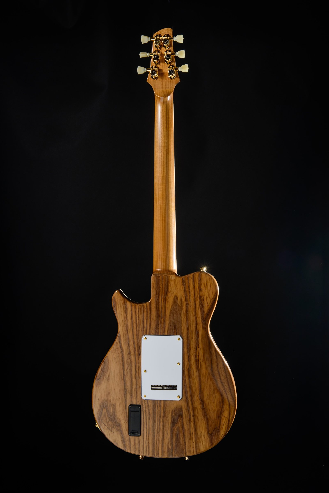

Solid body
Saddleback
Solid body and built to go from a whisper to full drive without losing its footing — the guitar Greylock began with.
Saddleback is where the idea starts: a guitar that disappears isn’t one good decision, it’s thousands of them working together. It is the original guitar from Greylock — the basis on which it all stands. The core can be made from a variety of woods, depending on the guitarist’s needs, while its design delivers sustain and control while staying comfortable and controlled across a full set; the top — quilted maple for a more traditional voice, torrefied ash for something more adventurous — is chosen alongside the neck carve and the electronics, not after them, so the whole guitar works together intentionally — a cogent and adaptable whole. It just works and does what the guitarist needs without compromise.
Like every Greylock, it carries the snakehead headstock for straight string pull and tuning stability, and frets that don’t wear out — the kind of details that stop being separate facts and just become an instrument that stays out of your way.
Saddleback is built for the guitarist who needs one instrument to cover a full set — clean tones that stay articulate, driven tones that don’t lose definition — without switching guitars between songs.
A guitar that disappears in your hands.
Built to order
Want spalted maple instead of curly? Saddleback can be built to order, and that conversation is exactly the one we want to have.
Specifications
- Scale length
- 25"
- Fretboard radius
- 10"
- Neck profile
- C-shape. Depth at the 1st fret: 0.83"
- Nut width
- 1.693"
- Frets
- 24 (Evo gold or stainless steel)
- Bridge
- Fixed (Hipshot) or Trem (TremKing)
Hipshot and TremKing are trademarks of their respective owners.
Electronics
- Standard format
- Three-pickup mini-humbucker (Freeway switching)
- Choice of
- Balanced Power, Smoke & Oak, or Glass & Chrome
- Also available
- Vintage humbucker set
Saddleback ships with your choice of pickup set. Balanced Power is open, articulate, and airy — built for country, Americana, and clean-tone players who want the guitar to do some of the tonal work. Smoke & Oak trades that openness for midrange body and grind, built for blues rock and classic rock players who want the guitar to come alive under a pushed amp. Glass & Chrome goes brighter still — a single-coil-adjacent voice for funk, power-pop, and indie players who need clarity to cut through a mix without extra gain, with an optional on-board boost for more signal without losing that character. A vintage-voiced humbucker set — the same format standard on Bascom — is also available for players who want warmth and touch-sensitive dynamics over mini-humbucker brightness.
See how we think about pickups →